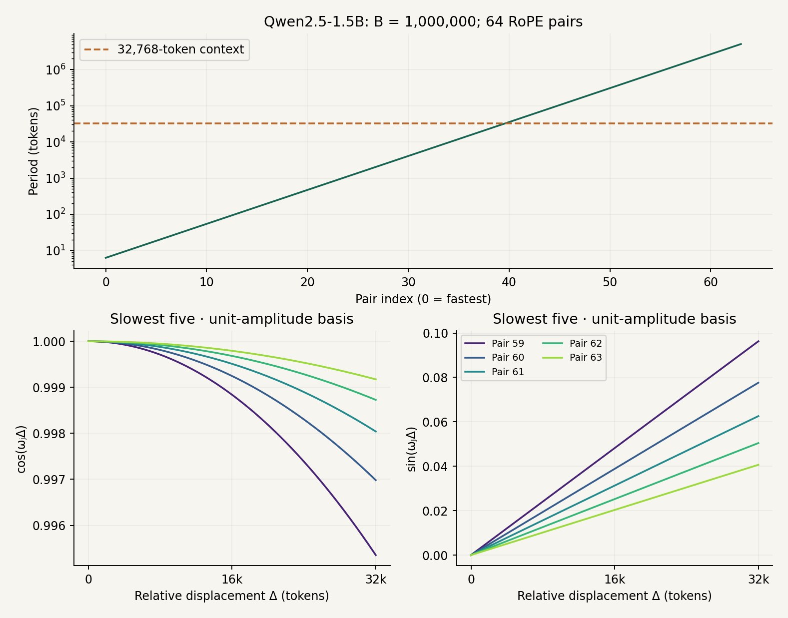
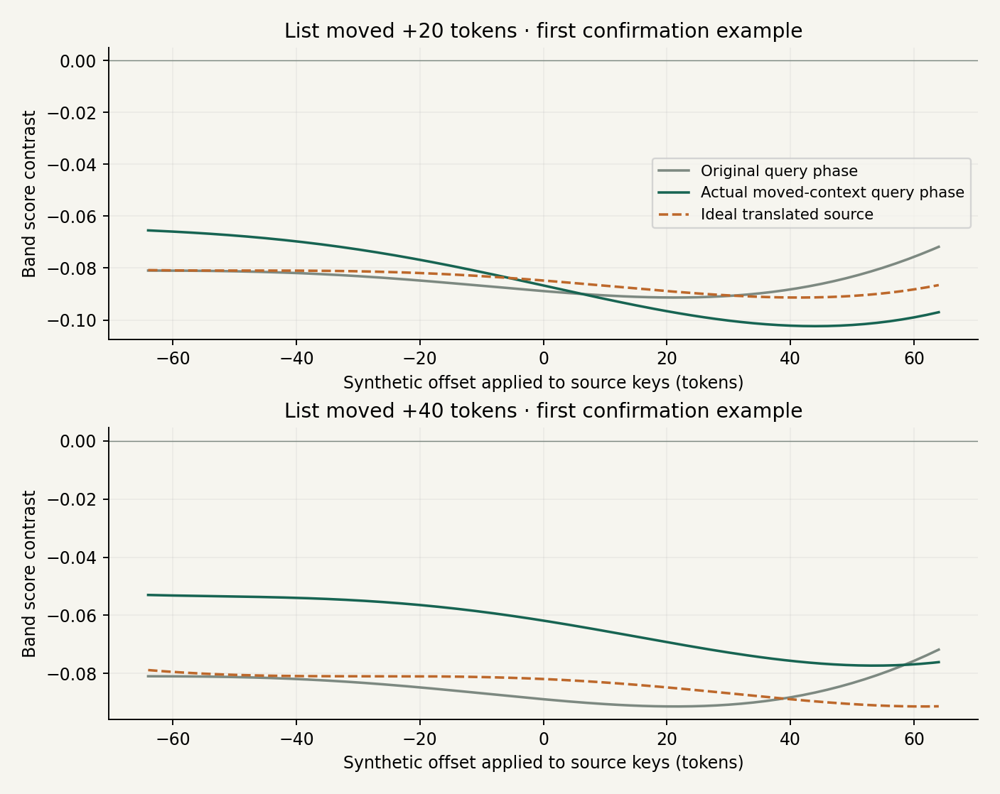
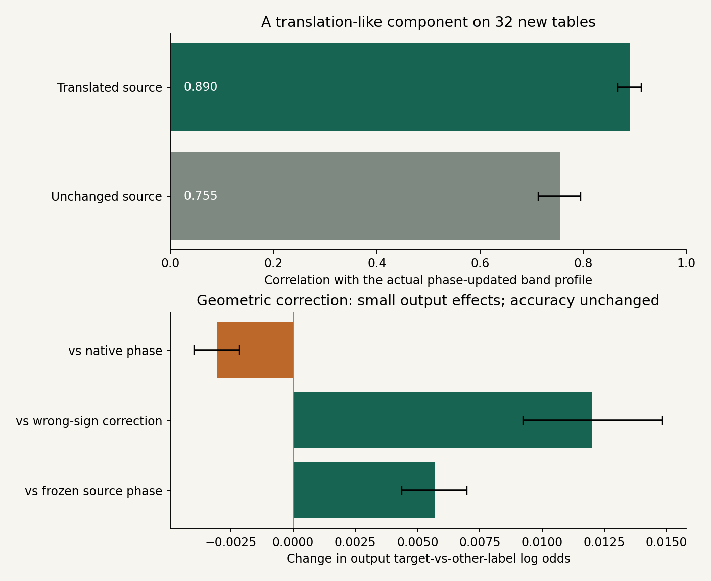
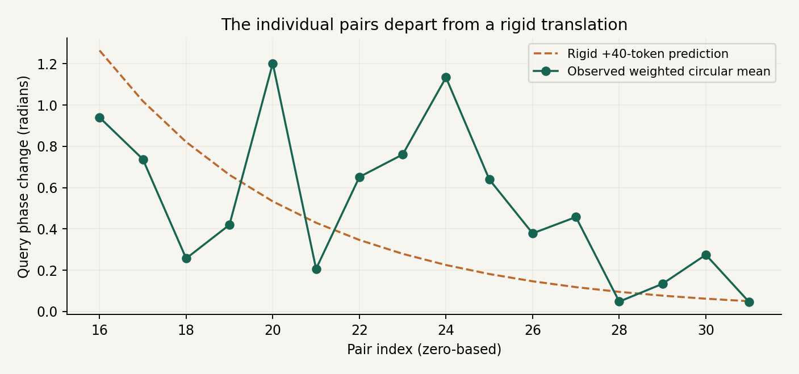

ROPE exploration
I wanted to understand how a transformer knows where to look. RoPE seemed like a good place to start. The parallel to the discrete Fourier transform (DFT) is fairly obvious, and I wanted to explore it in more detail.
The usual explanation is that RoPE rotates query and key vectors so their similarity depends on the distance between them. That explains the mechanism. What I wanted to know was what the mechanism could do.
Could a head look for something eighty tokens ago? Could it prefer a whole neighborhood rather than one position? Could it avoid a region? And if all of that was possible, did trained models actually use it?
Before trying to answer those questions, let’s start with what RoPE actually does.
What does RoPE change?
An attention head compares a query from one token with keys from the tokens it can attend to. A high dot product gives a key a higher attention score. Those scores become weights for combining information from the corresponding value vectors.
The words themselves are not enough to describe their relationship. “The dog followed the child” and “The child followed the dog” contain the same words, but their positions change the meaning.
RoPE—short for Rotary Position Embedding—brings position into the query–key comparison by rotating the vectors before taking their dot product. Its original description is in Su and colleagues’ RoFormer paper.
Each pair of coordinates rotates at its own frequency. When we expand the dot product, we get a sum of sines and cosines of the relative displacement. That is the connection I want to follow. Hua and colleagues’ Fourier Position Embedding paper (ICML 2025) makes this connection explicit: Section 2.2 interprets RoPE’s score as an inverse non-uniform DFT.
A shape, written as frequencies
First, a quick reminder of the ordinary DFT. Take a list of N samples. The DFT rewrites that list as coefficients of equally spaced frequencies. The inverse transform adds those components back together:
Each complex coefficient sets the amplitude and phase of a component; i is the imaginary unit. With all the coefficients, we recover every original sample, up to numerical rounding. This is true for any finite list of samples. It does not tell us the unknown continuous function between those samples.
Here is one shape: a smooth bump followed by a flat plateau. I reconstructed its 128 samples using progressively more frequency bins.

Why 65 stored bins rather than 128? For real-valued samples, the negative-frequency coefficients are conjugates of the positive-frequency ones. We only need one side of that spectrum. But a complex number is stored as two real numbers—its real and imaginary parts—so this is not a magical factor-of-two compression.
For 128 real samples, the 63 non-endpoint complex coefficients contain 126 real numbers. The zero and Nyquist coefficients are real, giving 128 independent real numbers in total.
The same idea, with RoPE’s frequencies
RoPE gives us a different collection of frequencies. For a head with d coordinates, there are d/2 coordinate pairs. The usual schedule is:
Here B is the base; I use 10,000 in the examples below. Each frequency is the previous one multiplied by the same factor:
So the frequencies are geometrically spaced: unevenly spaced on an ordinary axis, evenly spaced on a logarithmic one. The DFT’s frequency grid, by comparison, has a constant difference between neighboring frequencies.

From the dot product to waves
How do those frequencies enter attention? Start with the ordinary attention score, before any positional rotation. It is a query–key dot product, scaled by the square root of the head dimension:
Group the coordinates into pairs. One pair contributes qxkx + qyky to the unscaled dot product. Now write that query pair as the complex number zq = qx + iqy, and the key pair as zk = kx + iky. Multiplying the query by the complex conjugate of the key gives:
The bar means conjugation: it flips the sign of the imaginary part. The real part of this product is exactly our original two-coordinate dot product. There is also a geometric way to read it. Each coordinate pair is a vector in a plane, or equivalently a complex number with an amplitude and a phase:
Here rq = ‖qj‖ and rk = ‖kj‖ are the lengths of these two-coordinate pairs. The phases α and β describe their directions. Multiplication by the conjugated key subtracts its phase, so:
This is the familiar dot-product rule: the product of the lengths times the cosine of the angle between the vectors. Aligned pairs contribute positively, perpendicular pairs contribute zero, and opposite pairs contribute negatively. Their lengths determine the scale of that contribution.
For pair j, RoPE rotates the query at position m by multiplying it by exp(iωjm). It rotates the key at position n by exp(iωjn). When we conjugate the rotated key, its rotation changes sign:
RoPE preserves the two lengths and changes the phases to α + ωjm and β + ωjn. The angle difference after rotation is therefore α − β + ωj(m − n). Write Δ = m − n, so positive Δ means looking into the past. This pair’s scaled score becomes:
The dot product reads out the cosine of the new angle, weighted by both amplitudes. It does not return the angle itself. Two pairs with the same angle can contribute very different scores if their lengths differ; a small query or key amplitude suppresses that pair’s contribution. For fixed query and key content, RoPE changes the angle while leaving this amplitude product unchanged.
We can now connect that geometric picture to the sine-and-cosine coefficients. Hold the query and key content fixed and vary Δ. Including the usual attention scaling, define:
Now use Euler’s identity, exp(iωjΔ) = cos(ωjΔ) + i sin(ωjΔ), multiply, and take the real part:
That is where the cosine and sine coefficients come from. They are products of the original query and key coordinates. Summing the contributions of all coordinate pairs gives the full score:
Or, keeping the complex notation:
This is the Fourier connection: the same dot product we started with has become a sum of waves as we vary relative position. RoPE supplies the frequencies; the query and key supply the coefficients. The score has the form of an inverse non-uniform Fourier transform, without the attention layer needing to run an FFT.
ROPE in the same way as DFT is a universal function approximator
This is the intuition I wanted to explore: combine frequencies to build a desired positional shape. “Universal” needs a qualification here: a fixed RoPE head has a finite set of frequencies, so it cannot approximate every function arbitrarily well. The examples test what it can express on a chosen interval.
Now I can turn the original question into a small experiment. Choose a desired score at each of 256 displacements, then fit the sine and cosine coefficients using RoPE’s frequencies. I used a 128-dimensional head: 64 frequencies and 128 real coefficients.
The first three targets are a peak eighty tokens away, a broad neighborhood, and two separate regions. The last is deliberately harder: a spike at a single token.

The smooth shapes fit closely. The single-token spike does not: its peak is badly underestimated, even though the average error looks small because almost all the target samples are zero. With this frequency set and fitting method, a narrow spike is much harder to represent than a broad preference.
I used a small penalty on coefficient size to avoid fitting through enormous coefficients that cancel one another. In symbols, the fit minimizes:
There is an important qualification to “RoPE approximates what a DFT represents exactly.” A complete DFT is a basis for the sampled sequence. Here I chose fewer real coefficients than target samples, geometrically spaced frequencies, and a penalty on coefficient size. Those choices make this an approximation. Non-uniform spacing alone does not forbid exact interpolation: a non-uniform system with enough independent columns can also match finite samples exactly, although it may be poorly conditioned.
Combine the frequencies, then shift the shape
First, we combine the specific frequencies RoPE gives us. Their amplitudes determine how strongly each contributes. Setting an amplitude to zero removes that frequency’s contribution; setting it close to zero suppresses it. Their phases determine where the peaks and troughs fall. Adding them lets some parts reinforce one another and other parts cancel. That is how we obtain the peak, broad neighborhood, and two-region examples above.
Once we have a shape, we can move it. To make the shift easier to see, I rewrite the same sine-and-cosine contribution using an amplitude and a phase:
The capital Aj is the combined amplitude, rather than the earlier cosine coefficient aj. Expanding the right-hand side gives aj = Aj cos φj and bj = −Aj sin φj. The sine term is still there: it is absorbed into the phase shift. If both coefficients are zero, the contribution vanishes and its phase is irrelevant. With x = ωjΔ, the whole sum becomes:
To translate the entire shape by t tokens, keep those amplitudes and change each phase by an amount proportional to its frequency:
The shifts must be coordinated: each frequency gets its own phase change. Giving every frequency the same angle would generally change the shape instead of simply moving it. For a language model to use this mechanism, it would have to produce the right, different phase changes across many pairs while preserving the relevant amplitudes and key content. That seems like a demanding coordination problem to me; it is an intuition, rather than a measured claim about how hard it is for a model to learn. In this demo, one shared shift controls every rotation explicitly. The demo shows a mathematical possibility. It does not establish that a trained language model uses this mechanism to move an attention pattern by a few tokens. Try moving the fitted examples below. A positive shift moves the preference farther into the past.
Same fitted coefficients and geometric frequencies as above; the phase shift is computed directly, without refitting. The shifted line is shown only where it samples the original 0–255 fitting interval. The displayed window crops the translated shape at its edges.
All 64 pairs, moving together
Each dial below is one frequency pair in this constructed score. A single shift t changes all 64 phases together, but the angular speed is different for each pair: Δφj = −ωjt. The high frequencies at the top turn quickly; the low frequencies at the bottom barely move over the same number of tokens.
Gray dashed arrows show the original phases; green arrows show the shifted phases. Arrow lengths are normalized so the angle is visible. These are phases of the fitted pair-score coefficients, not measured query or key activations. Hover over a dial for its frequency, coefficient amplitude, and phase change.
Some of the waves barely move
Before looking inside the model, I had to put its frequencies next to its context window. The examples above use B = 10,000 to illustrate the mechanism. The model I investigated, Qwen2.5-1.5B-Instruct, uses B = 1,000,000 and a configured context of 32,768 tokens, with 128 coordinates per head. Those values come from its model configuration. The base is a frequency-schedule parameter; it is not a one-million-token context limit.
The distinction changes the picture considerably. A pair with frequency ωj has period Tj = 2π/ωj. Pair 63, the slowest, needs about 5.06 million tokens for a full turn. Across the largest separation in a 32,768-token window, it rotates only 0.041 radians, or 2.3 degrees. All of the last five pairs (59–63) rotate by less than 0.1 radians across that entire window.

This also gives the slow end of the schedule a high degree of positional redundancy. Neighboring frequencies are distinct, but over a window this short their cosines are almost constant and their sines are almost straight lines: cos(ωΔ) ≈ 1 and sin(ωΔ) ≈ ωΔ. They offer very similar distance profiles. Their learned query and key projections remain separate, though, so similar positional behavior does not make them redundant as content channels.
For these very slow pairs, changing the distance adds very little phase and can have little effect on a pair’s score. The qualification “very slow” matters: pair 49 rotates by 0.835 radians across the full window, although only 0.0065 radians over 256 tokens. The whole band 49–63 should not be treated as exactly position-independent at every distance.
Room for matching content
That suggested a useful division of labor: a nearly stationary pair can compare content without the comparison changing much just because a token moved. Faster pairs can contribute a stronger preference for where to look. Combined in the same attention score, they can favor the relevant feature at a useful relative position. Bringing content and position together is a central part of what I wanted to understand about attention.
Barbero and colleagues’ Round and Round We Go! (ICLR 2025) develops this interpretation in Gemma: fast frequencies support positional patterns, while the slowest bands are interpreted as semantic channels. Their p-RoPE experiments remove positional rotation from some slow channels while retaining their content vectors. Hua and colleagues’ Fourier Position Embedding (ICML 2025) likewise replaces undertrained frequencies below a context-dependent floor with zero frequency. Both provide context for the idea of content channels with little or no direct positional rotation; neither establishes that every slow Qwen pair serves that role.
A related paper from the earlier investigation, Jonasson’s Rotary Offset Features in Large Language Models (2025), shows how large, stable rotary components can still shape positional scores and attention sinks. That is a useful reminder that “slow” is not a complete description of what a learned pair does.
Little use of positional phase does not mean no use of the learned query–key angle. In Aj cos(ωjΔ + φj), a tiny ωjΔ leaves approximately Aj cos φj. That remaining angle can still distinguish a matching key from a non-matching one. Setting the rotation frequency to zero preserves it; setting a key’s learned phase to zero generally changes it. This distinction will matter when we reach the zero-bit phase experiment.
How small is the score change due to position?
For a fixed query–key content pair, write its scaled score contribution as sj(Δ) = Aj cos(ωjΔ + φj), where Aj = ‖qj‖ ‖kj‖ / √d. Then |sj(Δ) − sj(0)| ≤ Aj |ωjΔ|. This bounds the extra change caused by positional rotation, uniformly in the learned angle. Large amplitudes or contributions from many pairs can still matter after summation and softmax. It is not a bound saying that resetting φj has little effect.
Looking for this mechanism in a model
I went digging for evidence that trained models use this mechanism: combining frequencies to shape a positional preference, then changing phases to move it. Finding exact, irrefutable evidence is somewhat difficult. The query and key both change with the text, and a clean-looking attention pattern does not by itself tell us why the model produced it. But along the way, I discovered a few things about RoPE.
The closest case I found: one head, sixteen pairs
The closest evidence I found was in layer 23, head 4 of Qwen2.5-1.5B-Instruct, using pairs 16–31 (zero-based indices). This was a narrower result than the demonstration above: a translation-like component in one band of a head, rather than a whole attention pattern sliding intact.
I gave the model four items, each with a color, a shape, and a letter label, and asked a question such as “Return the label for red round.” Then I moved the same item list forward by 20 or 40 tokens, moving neutral background sentences to keep the question and final query token at exactly the same positions. The correct answer stayed the same. Could the query phases adjust to follow the relevant item, even though the query itself had not moved?
See one actual prompt and what moved
Items:
blue round : W
blue square : E
red round : S
red square : Z
Question:
Return the label for red round.The expected answer is S. Eight copies of “The weather remains calm.” were split before and after the item list: 0/8, 4/4, or 8/0. This moved the label tokens by exactly 0, 20, or 40 tokens while keeping the final assistant-prefix query at token 104 in this example. The system instruction, chat formatting, full prompts, positions, and original answers are in the saved experiment records.
With fixed query position and unchanged key content, following a key moved forward by Δp predicts a query-phase change of approximately Δarg qj = λωjΔp. A rigid compensation would have λ = 1. Here the positive sign compensates a key moving forward in the sequence; the demo above instead defines a positive shift as moving a preference farther into the past.
I compared the query phases the model actually produced with that prediction. To isolate their contribution, I kept the original query magnitudes and original key vectors fixed, substituting only the moved-context query phases in pairs 16–31. The curves below measure this band’s score for the target label minus its mean score for the three other labels, as the frozen keys are synthetically shifted. They are diagnostic score curves, not the model’s full attention probabilities.

The head and band were chosen after an exploratory search, so I froze that choice and tested 32 fresh tables × four questions × three placements: 384 prompts. The unmodified model answered 355 correctly (92.4%). On these new tables, the actual phase-updated profiles correlated more strongly with a translated source profile (0.890) than with an unchanged one (0.755). The paired advantage was 0.136, with a 95% table-bootstrap interval of 0.101–0.170. A phase-law fit gave λ = 0.885, with interval 0.830–0.945: close to a translation, but not an exact rigid one.
I also tested a phase intervention in the full model. On the 256 moved prompts, I replaced this band’s query phase with the original-location phase, then added either the predicted correction or its opposite. The scale λ = 0.95 had been fitted on discovery data and frozen before confirmation. Destination query magnitudes and actual destination keys were preserved; subsequent layers were recomputed.

The geometric correction slightly improved target-versus-other-label log odds relative to frozen source phase (+0.00569) and wrong-sign correction (+0.01202). It was slightly worse than leaving the native phase alone (−0.00304). First-token accuracy was identical in all four conditions: 230/256. There was no measurable improvement in the target token’s full-vocabulary probability. This was a first-token forward-pass test, not a test of complete generated answers under intervention.
How closely did the individual pairs follow the phase law?

The initial highest-frequency-band test (pairs 0–15, L19 H3) failed: its held-out profiles matched the unchanged source much better than the translated source. The middle-band result above was a follow-up with an independent confirmation set. Full-head pre-RoPE target-key similarity was high (mean cosine 0.981), but key content was not perfectly invariant. These controls and the remaining caveats are recorded in the original experiment report.
So this is the closest case I found, and I regard it as evidence for a partial translation-like phase component in this particular head and task. It does not prove that the model coordinates a general mechanism for sliding attention patterns by a few tokens. In particular, this experiment used 20- and 40-token relocations, a unique matching item, and a single sixteen-pair band.
The analysis and figure code recomputes the band metrics from the original captured queries, keys, and scores, checks them against the saved results, and regenerates every figure in this section. The recorded full-model output interventions are included too. This reproduces the analysis of the original run; it does not claim a fresh model evaluation.
Looking at the coordinate pairs
Along the way, I also looked directly at the query and key coordinate pairs. These are the plots from that investigation, using Qwen2.5-1.5B-Instruct: all 28 layers, with 12 query heads and two shared key heads per layer. Each shared key head serves six query heads. The query plots contain 768 sampled tokens from 16 prose excerpts; the key plots contain all 2,379 prose tokens from those excerpts, excluding the chat prefix.
There are two ways to look at the same pairs. The Cartesian view shows the two coordinates directly; the other shows their amplitude and angle. In both, the known positional rotation has been removed to show the coordinates before RoPE. These are individual query or key angles, not the relative query–key angle of an attention score.
Loading the saved points for adjustable scales…
Layer 0 · 12 query heads · page 1 of 28

Observations
Most of the points are close to the origin
The first thing I noticed was how much of the picture lives at low amplitude. Across these saved pre-RoPE observations, 84.0% of query points and 75.5% of key points have r < 2.5. About 95% of both lie below 5. These counts refer to token × frequency-pair observations, not to a fraction of heads, and they describe this model and these excerpts.
The detached clouds at larger radii catch the eye, but they can make the much denser central region hard to inspect. That is why the viewer has manual r limits and a per-head percentile scale. A small radius also does not mean an unimportant attention contribution: the query magnitude and the sum over pairs matter too.
There is structure inside the dense region
Zooming into the low-r region, the phase distribution does not look like featureless noise. There are ridges, valleys, and wave-like changes in density as the angle varies. Query head L8 H3 is one example.

The guides at fractions of π make the angular structure easier to compare. Some bands run near those directions, but their shapes and positions vary with radius and pair. This is a visual observation, not evidence that every head locks its phases to exact fractions of π. The density map pools all 64 pairs; it is not a trajectory of one vector rotating as a token moves.
Could we collapse nearby directions?
Seeing so many short vectors made me wonder whether we could round their angles to a few representative directions. A π/4 grid gives eight directions, requiring three phase bits; a π/2 grid gives four directions, requiring two. A π/3 grid would give six directions, still requiring three bits in a simple fixed-width code. I tested the first two grids rather than assuming the visible density determined the best codebook.
There is a geometric reason to try it. If we preserve a pair’s radius and change its phase by δ, the tip moves by:
At small r, the same angular change moves the vector less. That suggests a quantization experiment; it does not establish that the model can tolerate the change. Many small errors may combine, and a particular query may amplify one of them. The next section tests the effect on predictions.
The detached clouds and the projection biases
Many compact clouds far from the origin have an input-independent component: the learned bias in the query or key projection. For a query, before RoPE, the projection is:
Here h is the hidden state entering the projection, and j selects one coordinate pair. The bias bQ,j is the same for every input. If it dominates uj(h), the observations form a small cloud near that fixed offset. The equivalent key formula uses WK and bK.

The large-offset clouds have different degrees of input dependence. Compact, roughly round clouds tend to vary little around a stable offset; they look largely input-independent on these samples. Stretched clouds show stronger input-dependent variation along a preferred direction, as in the right-hand example. The useful clue is the spread relative to the offset, as well as the shape: roundness alone does not establish input independence. Even a stable cloud’s center can include the average projected hidden state:
What did the held-out bias check establish?
For query pairs whose mean radius exceeded 5 on eight discovery excerpts, the bias-only predictor accounted for 72.5% of squared magnitude on eight other excerpts, relative to predicting zero. A fitted constant vector accounted for 83.0%. For large-mean key pairs, the bias-only result was 99.86%. These are energy-relative prediction fits, not variance explained around a mean. They support a substantial constant component, especially in the keys; they do not make every large query pair constant. Recomputed statistics · Original experiment summary.
From a pattern to a quantization experiment
The pictures suggested rounding directions, so I tested a specific subset: low-frequency key pairs 49–63, and only token activations whose current pre-RoPE radius was r < 2.5. These are zero-based pair indices, fifteen of the head’s 64 pairs. All phase-rounding results in this comparison—including the zero-bit result—use this same band and magnitude rule. I changed the selected phases, kept their radii at full precision, and ran the model again to see whether its predictions survived.
For a uniform angular codebook with b bits, the rounding rule is:
This returns to the slow-frequency discussion. A weak positional rotation made these pairs interesting candidates for coarse coding, but their learned content angles could still matter. This experiment tests whether those angles can be discarded; it does not merely remove a small position-dependent rotation.
In the zero-bit test of those small, low-frequency key activations, I set the selected phase to 0: (x, y) becomes (r, 0). Pairs outside 49–63 and activations with r ≥ 2.5 were untouched by this edit. The selected pair’s length is preserved, and the normal positional RoPE rotation still follows.
I applied this selection through all 28 layers and both shared key heads, at all token positions. The magnitude threshold was applied to the actual key activation, not to the learned bias alone. Later activations were recomputed. The evaluation covered 7,168 next-token predictions from four previously used book excerpts, each with 2,062 input tokens.
| Selected phase coding | Loss increase (nats/token) | Next-token choices changed |
|---|---|---|
| 0 bits: selected phase → 0 | +0.26280 | 29.30% |
| 2 bits: nearest π/2 | +0.01824 | 7.63% |
| 3 bits: nearest π/4 | +0.00170 | 3.19% |

zero_small, pi2_small, and pi4_small in the saved results. Redrawn from the original counterfactual runs. “Changed” means different from the baseline, not necessarily incorrect. Conditions selected about 52–54% of the slow-pair instances; downstream changes affect which later pairs meet the radius threshold.The distinction mattered. Three-bit rounding had a small average loss effect on these excerpts; setting phases to zero even within this small-radius, low-frequency subset had a substantial effect. The phases could be stored coarsely in this setting, but they were not simply unused. Protecting the first 14 keys gave a similar three-bit result: +0.00124 nats/token and 3.08% changed choices.
The phase-rounding test above measured prediction changes. The later implementation below tested whether compact polar scores could also make attention faster. These four excerpts were already part of the investigation, so the numbers do not establish safety on new tasks or long-distance retrieval. Changing only a learned bias is also a different experiment from rounding a token’s full key vector.
From coarse phases to a running attention implementation
I then implemented compact polar scoring on the GPU. Each key pair used four phase bits and four radius bits. I tried two ways to use the approximate scores: apply softmax and combine all the original value vectors, or use the scores to select 64 or 128 candidates, add 22 fixed anchors (the first 14 and most recent eight tokens), and recompute exact attention with the original keys and values for that shortlist. This is a different experiment from selectively rounding the small, slow pairs above.
The timings below are our recorded Apple M5 Max, float32 PyTorch MPS results with Qwen2.5-1.5B-Instruct and native 32,000-token contexts. I compare with dense grouped QK → softmax → AV, the faster dense implementation on this cache layout. A speed-up is dense time divided by method time; a number below 1 means a slowdown.
| Batch | Dense grouped | Compact / all values | Top 64 + anchors | Top 128 + anchors |
|---|---|---|---|---|
| 1 | 0.295 ms | 0.208 ms · 1.42× | 0.315 ms · 0.94× | 0.318 ms · 0.93× |
| 3 | 0.710 ms | 0.588 ms · 1.21× | 0.417 ms · 1.70× | 0.414 ms · 1.71× |
| 8 | 1.599 ms | 1.277 ms · 1.25× | 0.972 ms · 1.65× | 0.972 ms · 1.64× |
| 32 | 5.505 ms | 4.437 ms · 1.24× | 3.327 ms · 1.65× | 3.483 ms · 1.58× |
| Method | ms/token | Speed-up | Loss increase (nats/token) | Choices changed |
|---|---|---|---|---|
| Dense grouped attention | 28.37 | 1.00× | +0.0000 | 0.00% |
| Compact scores, all values | 27.73 | 1.02× | +0.1525 | 17.97% |
| Compact shortlist, top 64 + 22 anchors | 26.36 | 1.08× | +0.1354 | 17.19% |
| Compact shortlist, top 128 + 22 anchors | 26.24 | 1.08× | +0.0959 | 13.54% |
At batch 1, compact scores with all values reduced attention time from 0.295 to 0.208 ms per layer: 1.42× faster. The shortlist paths were slightly slower than dense at this batch size. At batch 32, the top-64 path took 3.327 ms versus 5.505 ms for dense: 1.65× faster. These are attention-only measurements from layer 10, including new-key encoding, lookup-table construction, the compact scan, and either all-value attention or top-k selection, anchor union, gathering, and exact shortlisted attention. They exclude initial index construction, cache append, and the rest of the model.
The whole-model result was much smaller. With all 28 layers participating in cached decoding, compact/all-values went from 28.37 to 27.73 ms per token (1.02×); the top-128 path reached 26.24 ms (1.08×). These are whole-model decode timings, excluding the common exact dense prefill and initial index setup. They are not prompt-to-completion speed-ups. Four counterbalanced runs varied substantially: dense run means ranged from 27.88 to 44.29 ms/token, and top-128 from 24.26 to 30.59. I would treat the small difference as a prototype result, rather than a robust general speed guarantee.
The quality cost is shown alongside the timings. It was measured on three native 32k passages, 128 teacher-forced predictions each (384 total); timing repeats used 32 steps on the first passage. Compact/all-values increased loss by 0.1525 nats/token; top-128 by 0.0959. This implementation retained the full original float32 K/V cache for the controlled comparison, so these measurements do not demonstrate dedicated compressed-cache memory savings.
Timing method, baselines, and recorded results
Attention-only values are medians of seven trials of 20 calls, with method order rotated. Batch 1 uses one real context, batch 3 uses three, and batches 8 and 32 repeat those contexts into independent memory. These are repeated-call timings; single-call latency is recorded separately. Whole-model timings are medians of four per-run means, discarding the first eight of 32 decode steps in each run and rewinding to the identical exact-prefix cache.
The older strided-cache SDPA baseline was slower: against it, the batch-32 top-64 attention path appears 4.74× faster (15.767 / 3.327 ms). The main table uses the stronger grouped baseline, giving 1.65×. Keeping that distinction avoids attributing a cache-layout or baseline implementation effect entirely to quantization.
Attention timings and all baseline variants · Whole-model repeated timings · Recorded quality measurements · Protocol and hashes. This script recomputes the table from the original recorded trials and checks it against the original summary; it does not rerun the hardware benchmark.
I then found that the polar-coordinate approach had already been published. Wu and colleagues’ PolarQuant (NeurIPS 2025) encodes RoPE-paired key coordinates as quantized radii and angles and implements lookup-based decoding. That is closely related to the representation explored here. The compact/all-values implementation above is a PolarQuant-style comparison, not a reproduction of their quantizer or kernels. Our selective pre-RoPE phase-rounding test is another distinct experiment; its bit counts, quality results, and the later implementation’s speed measurements should not be interchanged.
A similarly named paper, and the reproducible experiment
Han and colleagues’ PolarQuant is a distinct method using random preconditioning and a recursive polar transform. The paper closest to direct RoPE-pair radius/angle coding is the Wu et al. paper above.
All recorded results, per-excerpt losses, and intervention checks · Runnable model experiment · Pair-rounding implementation. The runner needs PyTorch, Transformers, and Qwen weights; the article figures can be regenerated from the posted results without model inference.
Reproduce the figures
The constructed DFT and RoPE examples come from this Python script. It defines the target functions, fits the coefficients, and saves the figures together with the numerical errors and all plotted samples and coefficients. No model downloads or external data are needed for these constructed examples.
python -m pip install -r requirements.txt
python code/figures.py
python -m unittest discover -s code -p 'test_*.py'The model plots use the original saved activation data, split losslessly by layer. This reproduction script regenerates all 70 plot pages and all four PDFs. The original point counts, sampled token positions, and file hashes are included. The interactive viewer draws the saved points directly and lets you adjust r and phase ranges. The PDFs retain their fixed scales. Both include dotted gray angular guides. The plotting and NPZ-reading code is in scatter-viewer.mjs and scatter-data.mjs.
python code/reproduce_observations.py --verify
python code/reproduce_observations.py --kind queries --view xy --page 0
# Regenerate all 70 pages and all four PDFs:
python code/reproduce_observations.py --pdfThe observations figures, density bins, amplitude counts, bias checks, and quantization chart are regenerated by observations.py, using the saved activations, extracted projection biases, and recorded intervention results.
python code/observations.py
python code/translation.py
python code/speed_results.py
python code/slow_frequencies.pySource and editing on GitHub · References: RoFormer; Fourier Position Embedding (§2.2); NumPy DFT conventions.